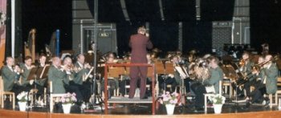
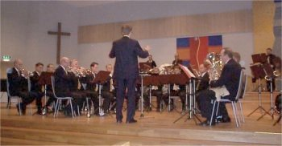
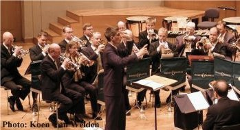
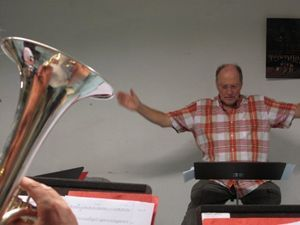
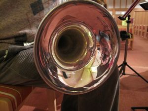

Om Berga Brassband
I början av 90-talet fick den sanne entusiasten Sven-Olof Gellerstedt för sig att han skulle sätta samman ett brassband. Efter otaliga telefonsamtal med möjliga och omöjliga bandmedlemmar kunde han på hösten 1993 för första gången höja taktpinnen i spetsen för det nya bandet. En handfull av medlemmarna hade tidigare erfarenhet av brassband, men det stora flertalet hade aldrig tidigare kommit i kontakt med genren.

Sven-Olof var inte rädd att sätta ribban högt och när han insisterade på att man på premiärkonserten skulle framföra tävlingsstycket ”Variations on a Chord” var det en och annan i bandet som blev lite nervös. Det stycket hade man nämligen dittills aldrig klarat att spela rätt igenom utan att bryta. Sven-Olofs obändiga tro på att ingenting var omöjligt smittade dock av sig på musikerna och bandet kom snabbt att genomsyras av en hög ambitionsnivå parad med en påtaglig känsla av samhörighet och ömsesidig uppmuntran. Att formeln var lyckosam illustreras i en stadigt höjd kvalitet vid bandets många framträdanden. Tävlingsresultaten blev också successivt bättre, efter den hedrande sistaplatsen vid det första SM-deltagandet 1994.

Våren 2001 övertogs dirigentrollen av Mattias Hjortlinger, som med sitt stora kunnande och entusiasm lockade fram nya kvaliteter i bandet. Redan efter 3–4 månader lotsade han bandet till en bronsplats i SM, vilket i sin tur ledde till att bandet fick representera Sverige vid Europamästerskapen i Bryssel 2002. Detta äventyr blev givetvis en höjdpunkt för bandet och man lyckades återigen erövra en bronsplats, denna gång i B-gruppen, med länder som Italien och Tyskland efter sig i resultatlistan.

Helene Andersson, som har lång internationell erfarenhet som blåsmusikdirigent, kom till oss julen 2005 och fattade tycke för brassbandsklangen. 2006 tilldelades Berga Brassband Lions Club Österåkers kulturstipendium, och spelade in en CD, ”Tir n’a Noir”, i samarbete med Lions.
I slutet av 2006 tog Samuel Peterson över dirigentpinnen efter sin tjänst i Livgardets Dragonmusikkår samtidigt som han studerade vid Kungliga Musikhögskolan.
Hösten 2008 firade bandet 15-årsjubileum med konsert i Österåkers kyrka. Samuel flyttade julen 2008 till Göteborg för civilingenjörsstudier vid Chalmers tekniska högskola.

Vår senaste ordinarie dirigent är Per Lyng, som är professionell dirigent med lång erfarenhet och ett stort intresse av att arbeta med ungdomar och amatörer.
Per har varit chef för Regionmusiken Stockholm och konstnärlig ledare för Stockholms Blåsarsymfoniker under många år. Sedan februari 2009 dirigerar han BBB och inspirerar oss med sin stora erfarenhet och pedagogiska talang.
I januari 2011 flyttade bandet från Sågen i Åkersberga till Sankt Eriks kyrka i Sollentuna.

Sedan några år tillbaka agerar vi som en liten ensemble som då och då spelar på fester, gudstjänster och andra tillfällen.